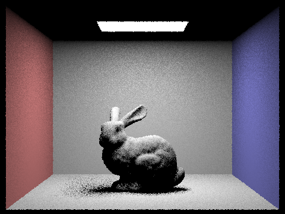
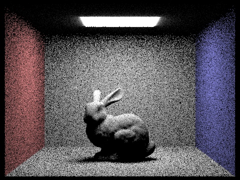
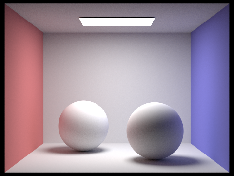
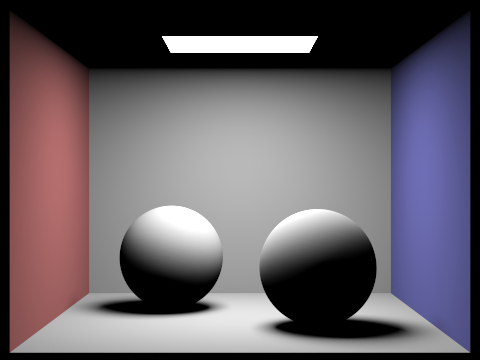
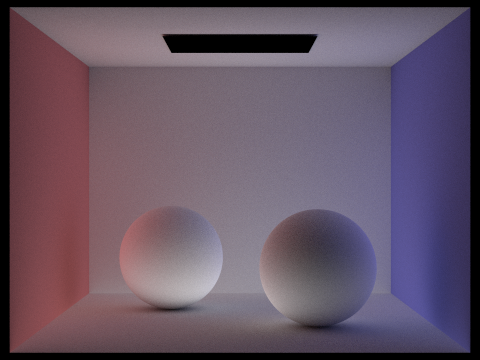
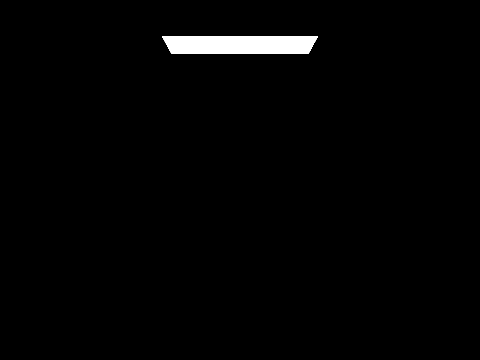
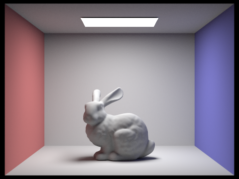
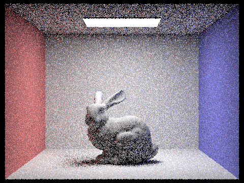
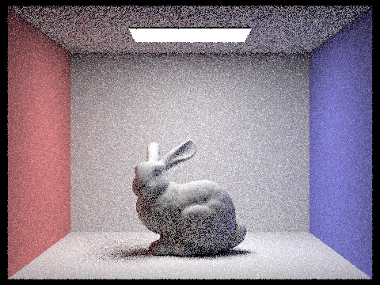
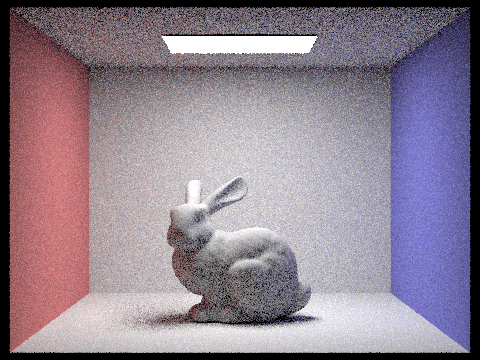

We created a for loop to sample `num_samples` times. For each iteration, we use `hemisphereSampler` to uniformly sample incoming ray directions in the hemisphere. To create the ray, we set `hit_p` as the origin and since the vector returned by `get_sample` is in object space, we multiply it by the `o2w` matrix to transform it into world space and set that as the ray’s direction. Following the spec instructions, we set the ray's `min_t` field to EPS_F to alleviate numerical precision issues.
Then, we need to check if the ray intersects a light source using `bvh->intersect`. If it does, then use the reflection equation to calculate how much outgoing light there is. f, which describes how the surface reflects light from an incoming direction to an outgoing direction, is given by `isect.bsdf->f(wj, w_out)`. L is the radiance arriving at hit_p from incoming direction, and that is calculated using `newIsect.bsdf->get_emission()` because it’s direct lighting. cos_theta(wj) is also trivially given using the helper function. Since we uniformly sample in the hemisphere, the pdf is 1/(2π).
We sum the calculated outgoing radiance across these samples and normalize it by dividing by `num_samples`.
The main difference between the two implementations is the importance sampling samples only from lights and not uniformly in a hemisphere. Therefore, we created a for loop to iterate through each light in the scene. If it’s a point light, then we only need to sample once since all samples from a point light will be the same. Otherwise, we want `ns_area_light` samples. We get each sample using `light->sample_L` which gives us the incoming radiance, vector in world space, and the pdf. Then, we convert the vector into object space using the `w2o` matrix. If `z` of the object-space vector is greater than or equal to zero, then it’s in front of the surface at the hit point and will contribute to the lighting. Therefore, we can create a shadow ray similarly using hit_p and the world-space vector. We set `min_t` to EPS_F and `max_t` to distToLight - EPS_F. If this ray intersects the scene, then the hit point is in a shadow with respect to the current light source.
Therefore, we only want to calculate the radiance using the reflectance equation if the shadow ray does not intersect. f and cos_theta are calculated the same way as the uniform hemisphere sampling using the object-space vector. L and pdf are the values given by `sample_L`.
We then sum all of outgoing radiance and normalize it by dividing by the number of samples.
This image is created using 1 light ray and 1 sample per pixel.
This image is created using 4 light rays and 1 sample per pixel.
This image is created using 16 light rays and 1 sample per pixel.
This image is created using 64 light rays and 1 sample per pixel.
With greater number of light rays, the image produced becomes visibly less noisy and has more accurate lighting.
This image is created using uniform hemisphere sampling.
This image is created using importance sampling.
To render these two images, I used the same number of light rays and samples per pixel. As shown, uniform hemisphere sampling created a much more noisy image. This is because it samples the hemisphere uniformly across all directions, including directions where there may be little to no light contribution. On the other hand, importance sampling focuses the sampling on areas that contribute the most to the final result (ie. samples towards directions with light contribution). Additionally, importance sampling can take into account the visibility of light sources and their occlusion by objects in the scene, further improving the accuracy of the final result and reducing noise.
We first calculate the direct lighting using `one_bounce_radiance`. Then, we use `isect.bsdf->sample_f` to get the object-space vector, pdf and the brdf. To create the ray, we set `hit_p` as the origin, and we multiply the object-space vector by the `o2w` matrix to transform it into world space and set that as the ray’s direction. The depth of this ray is set to `r.depth - 1`. If the max_ray_depth > 1, then that means we do want indirect lighting. If the ray intersects the scene and its depth > 0, then we do recursion and use the reflectance equation to calculate the radiance. This is guaranteed to happen for tracing the first indirect bounce. For subsequent ones, we use Russian Roulette to prevent infinite recursion. The continuation probability is set to 0.7. If the coin flip returns true, then we will do the calculation and normalize it by the continuation probability. The sum of the radiance will be all of the indirect lighting.
This image is rendered with global illumination and 1024 samples per pixel.
This image is rendered with direct illumination and 1024 samples per pixel. As shown, we only have the illumination caused by the ceiling light. The ceiling is dark and no reflected lights were accounted for.
This image is rendered with indirect illumination and 1024 samples per pixel. We do not have the illumination directly caused by the ceiling light. Instead, we can see the lights being reflected off the walls. The spheres show the colors of the walls since lights were reflected onto them.
This image is rendered with max_ray_depth set as 0.
This image is rendered with max_ray_depth set as 1.
This image is rendered with max_ray_depth set as 2.
This image is rendered with max_ray_depth set as 3.
This image is rendered with max_ray_depth set as 100.
As the images above shown, we can see the indirect lighting being included in the image as max_ray_depth increases. There's no significant differences with max_ray_depth = 2, 3, 100 because Russian Roulette could terminate before 100 bounces and this is a pretty simple scene, so good results with few bounces are expected.
This image is rendered with 1 sample per pixel.
This image is rendered with 2 samples per pixel.
This image is rendered with 4 samples per pixel.
This image is rendered with 8 samples per pixel.
This image is rendered with 16 samples per pixel.
This image is rendered with 64 samples per pixel.
This image is rendered with 1024 samples per pixel.
As the number of samples increases, the image becomes significantly less noisy/blurry. With more samples, we can render more realistic image with more accurate lighting.
Link: https://zhlucy.github.io/cs184-proj-webpage/proj3/index.html